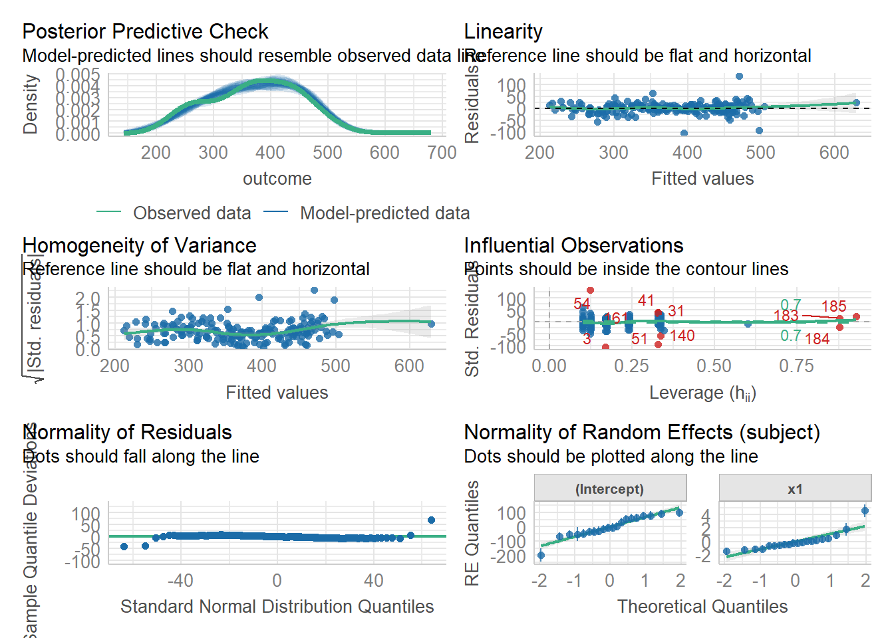

W5 Exercises: Bringing it all together
Take your pick!
Question 1
You can find all the datasets that we have seen (and more!) as an additional doc in the readings page.
For each one, there is a quick explanation of the study design which also details the research aims of the project.
Pick one of the datasets and, in your groups:
- explore the data, and do any required cleaning (most of them are clean already)
- conduct an analysis to address the research aims
- write a short description of the sample data (see Chapter 11 #the-sample-data)
- write a short explanation of your methods (see Chapter 11 #the-methods)
- write a short summary of your results, along with suitable visualisations and tables (see Chapter 11 #the-results)
- Post some of your writing on Piazza and we can collectively discuss it!
Each of the datasets contains some tags that give an indication of the type of study. Anything with either “#binomial-outcome” or “#non-linear” you can ignore as we have not covered this in DAPR3.
Flashcards: lm to lmer
In a simple linear regression, there is only considered to be one source of random variability: any variability left unexplained by a set of predictors (which are modelled as fixed estimates) is captured in the model residuals.
Multi-level (or ‘mixed-effects’) approaches involve modelling more than one source of random variability - as well as variance resulting from taking a random sample of observations, we can identify random variability across different groups of observations. For example, if we are studying a patient population in a hospital, we would expect there to be variability across the our sample of patients, but also across the doctors who treat them.
We can account for this variability by allowing the outcome to be lower/higher for each group (a random intercept) and by allowing the estimated effect of a predictor vary across groups (random slopes).
Before you expand each of the boxes below, think about how comfortable you feel with each concept.
This content is very cumulative, which means often going back to try to isolate the place which we need to focus efforts in learning.
Simple Linear Regression
Formula:
- \(y_i = b_0 + b_1 x_i + \epsilon_i\)
R command:
lm(outcome ~ predictor, data = dataframe)
Note: this is the same as lm(outcome ~ 1 + predictor, data = dataframe). The 1 + is always there unless we specify otherwise (e.g., by using 0 +).
Clustered (multi-level) data
When our data is clustered (or ‘grouped’) such that datapoints are no longer independent, but belong to some grouping such as that of multiple observations from the same subject, we have multiple sources of random variability. A simple regression does not capture this.
If we separate out our data to show an individual plot for each grouping (in this data the grouping is by subjects), we can see how the fitted regression line from lm() is assumed to be the same for each group.

Random intercepts
By including a random-intercept term, we are letting our model estimate random variability around an average parameter (represented by the fixed effects) for the clusters.
Formula:
Level 1:
- \(y_{ij} = b_{0i} + b_{1} x_{ij} + \epsilon_{ij}\)
Level 2:
- \(b_{0i} = \gamma_{00} + \zeta_{0i}\)
Where the expected values of \(\zeta_{0}\), and \(\epsilon\) are 0, and their variances are \(\sigma_{0}^2\) and \(\sigma_\epsilon^2\) respectively. We will further assume that these are normally distributed.
We can now see that the intercept estimate \(b_{0i}\) for a particular group \(i\) is represented by the combination of a mean estimate for the parameter (\(\gamma_{00}\)) and a random effect for that group (\(\zeta_{0i}\)).
R command:
lmer(outcome ~ predictor + (1 | grouping), data = dataframe)
Notice how the fitted line of the random intercept model has an adjustment for each subject.
Each subject’s line has been moved up or down accordingly.

Pooling & Shrinkage
If you think about it, we might have done a similar thing to the random intercept with the tools we already had at our disposal, by using lm(y~x+subject). This would give us a coefficient for the difference between each subject and the reference level intercept, or we could extend this to lm(y~x*subject) to give us an adjustment to the slope for each subject.
However, the estimate of these models will be slightly different:

Why? One of the benefits of multilevel models is that our cluster-level estimates are shrunk towards the average depending on a) the amount of across-cluster variation and b) the number of datapoints in clusters.
In another way, we can think of the multilevel model as “borrowing strength” from what we know about e.g., clusters 1-19 to inform what we think about cluster 20. This also gets termed “partial pooling” because we are partially combining all the information across clusters to get an average, but still allowing those clusters to vary.
| model | pooling | explanation |
|---|---|---|
| lm(y~x) | complete | all information across clusters is combined (pooled) together and a line is fitted |
| lm(y~group + x) | no | information is split up into clusters, and cluster differences are estimated. observations from cluster \(i\) contribute only to estimates about cluster \(i\) |
| lmer(y~x+(1|group)) | partial | information is combined (pooled) but cluster-level variation is modelled. cluster level estimates are shrunk towards the average depending upon how distinct the clustering is, and how much data a cluster has |
Random slopes
Formula:
Level 1:
- \(y_{ij} = b_{0i} + b_{1i} x_{ij} + \epsilon_{ij}\)
Level 2:
- \(b_{0i} = \gamma_{00} + \zeta_{0i}\)
- \(b_{1i} = \gamma_{10} + \zeta_{1i}\)
Where the expected values of \(\zeta_0\), \(\zeta_1\), and \(\epsilon\) are 0, and their variances are \(\sigma_{0}^2\), \(\sigma_{1}^2\), \(\sigma_\epsilon^2\) respectively. We will further assume that these are normally distributed.
As with the intercept \(b_{0i}\), the slope of the predictor \(b_{1i}\) is now modelled by a mean \(\gamma_{10}\) and a random effect for each group (\(\zeta_{1i}\)).
R command:
lmer(outcome ~ predictor + (1 + predictor | grouping), data = dataframe)
Note: this is the same as lmer(outcome ~ predictor + (predictor | grouping), data = dataframe) . Like in the fixed-effects part, the 1 + is assumed in the random-effects part.

Model parameters: Fixed effects
The plot below show the fitted values for each subject from the random slopes model lmer(outcome ~ predictor + (1 + predictor | grouping), data = dataframe)

The thick green line shows the fixed intercept and slope around which the groups all vary randomly.
The fixed effects are the parameters that define the thick green line, and we can extract them using the fixef() function:
fixef(random_slopes_model)(Intercept) x1
405.790 -0.672 The fixed effects are the estimated intercept and slopes for the average group, around which groups vary.
Model parameters: Variance components
As well as estimating the fixed effects, multilevel models are also defined by the “variance components”. These are the variances and covariances of the random effects. Looking at these we can ask: how much do groups vary in around the fixed intercept? and around the fixed slope? Do groups with higher intercepts also have higher slopes (this is the correlation).
We can think of these as the width of the distributions of group deviations from each fixed effect

We can extract these using the VarCorr() function, and we can also see them in the “random effects” part of the summary() output from a model.
VarCorr(random_slopes_model) Groups Name Std.Dev. Corr
subject (Intercept) 72.72
x1 1.36 -0.35
Residual 25.74 Remember, variance is just standard deviation squared!
Group-specific random effects
The plots below show the fitted values for each subject from each model that we have gone through in these expandable boxes (simple linear regression, random intercept, and random intercept & slope):

In the random-intercept model (center panel), the differences from each of the subjects’ intercepts to the fixed intercept (thick green line) have mean 0 and standard deviation \(\sigma_0\). The standard deviation (and variance, which is \(\sigma_0^2\)) is what we see in the random effects part of our model summary (or using the VarCorr() function).
Random effects:
Groups Name Variance Std.Dev.
subject (Intercept) 5207 72.2
Residual 1512 38.9
Number of obs: 185, groups: subject, 20
In the random-slope model (right panel), the same is true for the differences from each subjects’ slope to the fixed slope. As our fixed effects are:
fixef(random_slopes_model)(Intercept) x1
405.790 -0.672 We can extract the deviations for each group from the fixed effect estimates using the ranef() function. These are the deviations from the overall intercept (\(\widehat \gamma_{00} = 405.79\)) and slope (\(\widehat \gamma_{10} = -0.672\)) for each subject \(i\).
So the first entry, sub_308, has an intercept 31.33 above the fixed intercept of 405.79, and has a slope that is -1.44 below the fixed slope of -0.672.
ranef(random_slopes_model)$subject
(Intercept) x1
sub_308 31.33 -1.4400
sub_309 -28.83 0.4184
sub_310 2.71 0.0599
sub_330 59.40 0.3853
sub_331 74.96 0.1739
sub_332 91.09 -0.2346
sub_333 97.85 -0.1906
sub_334 -54.19 -0.5585
sub_335 -16.90 0.9207
sub_337 52.22 -1.1660
sub_349 -67.76 -0.6844
sub_350 -5.82 -1.2379
sub_351 61.20 0.0550
sub_352 -7.91 -0.6650
sub_369 -47.64 -0.4681
sub_370 -33.12 -1.1100
sub_371 77.58 -0.2040
sub_372 -36.39 -0.4583
sub_373 -197.58 1.7990
sub_374 -52.20 4.6051
with conditional variances for "subject"
Group-specific coefficients
We can see the estimated intercept and slope for each subject \(i\) specifically, using the coef() function.
coef(random_slopes_model)$subject
(Intercept) x1
sub_308 437 -2.112
sub_309 377 -0.254
sub_310 409 -0.612
sub_330 465 -0.287
sub_331 481 -0.498
sub_332 497 -0.907
sub_333 504 -0.863
sub_334 352 -1.231
sub_335 389 0.248
sub_337 458 -1.838
sub_349 338 -1.357
sub_350 400 -1.910
sub_351 467 -0.617
sub_352 398 -1.337
sub_369 358 -1.140
sub_370 373 -1.782
sub_371 483 -0.876
sub_372 369 -1.131
sub_373 208 1.127
sub_374 354 3.933
attr(,"class")
[1] "coef.mer"Notice that the above are the fixed effects + random effects estimates, i.e. the overall intercept and slope + deviations for each subject.
cbind(
int = fixef(random_slopes_model)[1] +
ranef(random_slopes_model)$subject[,1],
slope = fixef(random_slopes_model)[2] +
ranef(random_slopes_model)$subject[,2]
) int slope
[1,] 437 -2.112
[2,] 377 -0.254
[3,] 409 -0.612
[4,] 465 -0.287
[5,] 481 -0.498
[6,] 497 -0.907
[7,] 504 -0.863
[8,] 352 -1.231
[9,] 389 0.248
[10,] 458 -1.838
[11,] 338 -1.357
[12,] 400 -1.910
[13,] 467 -0.617
[14,] 398 -1.337
[15,] 358 -1.140
[16,] 373 -1.782
[17,] 483 -0.876
[18,] 369 -1.131
[19,] 208 1.127
[20,] 354 3.933
Plotting random effects
The quick and easy way to plot your random effects is to use the dotplot.ranef.mer() function in lme4.
randoms <- ranef(random_slopes_model, condVar=TRUE)
dotplot.ranef.mer(randoms)$subject
Assumptions, Influence
In the simple linear model \(\color{red}{y} = \color{blue}{b_0 + b_1(x)} \color{black}{+ \varepsilon}\), we distinguished between the systematic model part \(b_0 + b_1(x)\), around which observations randomly vary (the \(\varepsilon\) part) - i.e. \(\color{red}{\text{outcome}} = \color{blue}{\text{model}}\) \(+ \text{error}\).
In the multi-level model, our random effects are another source of random variation: \(\color{red}{\text{outcome}}\) = \(\color{blue}{\text{model}}\) \(+ \text{group-error} + \text{individual-error}\). As such, random effects are another form of residual, and our assumptions of zero mean constant variance apply at both levels of residuals (see Figure 1).

- We can assess these normality of both
resid(model)andranef(model)by constructing plots using functions such ashist(),qqnorm()andqqline().
- We can also use
plot(model, type=c("p","smooth"))to give us our residuals vs fitted plot (smooth line should be horizontal at approx zero, showing zero mean).
plot(model, form = sqrt(abs(resid(.))) ~ fitted(.), type = c("p","smooth"))will give us our scale-location plot (smooth line should be horizontal, showing constant variance).
We can also use the check_model() function from the performance package to get lots of info at once:
library(performance)
check_model(random_slopes_model)
Inference
To get p-values for our coefficients, there are lots of different ways (see Optional Chapter 3 if you’re interested).
For DAPR3, we are recommending using the “Satterthwaite” method, which can be done by re-fitting the model the lmerTest package:
random_slopes_model2 <- lmerTest::lmer( outcome ~ 1 + x1 + (1+x1|subject), data=dat)
summary(random_slopes_model2)Linear mixed model fit by REML. t-tests use Satterthwaite's method [
lmerModLmerTest]
Formula: outcome ~ 1 + x1 + (1 + x1 | subject)
Data: dat
REML criterion at convergence: 1862
Scaled residuals:
Min 1Q Median 3Q Max
-4.069 -0.417 -0.014 0.431 5.226
Random effects:
Groups Name Variance Std.Dev. Corr
subject (Intercept) 5287.68 72.72
x1 1.86 1.36 -0.35
Residual 662.33 25.74
Number of obs: 185, groups: subject, 20
Fixed effects:
Estimate Std. Error df t value Pr(>|t|)
(Intercept) 405.790 16.666 18.045 24.35 3e-15 ***
x1 -0.672 0.313 16.757 -2.15 0.047 *
---
Signif. codes: 0 '***' 0.001 '**' 0.01 '*' 0.05 '.' 0.1 ' ' 1
Correlation of Fixed Effects:
(Intr)
x1 -0.370We can also conduct model comparisons by doing a likelihood ratio test. This can be useful to test multiple coefficients at once. The clearest way to think about this is to start with the full model and remove the bits you want to test.
Typically, as we are interested in testing the fixed part, our ‘restricted model’ might have random slopes of predictors that are not in the fixed effects, which looks weird but is okay because we’re just using that model as a comparison point:
model2 <- lmer( outcome ~ 1 + x1 + x2+ (1+x1|subject), data=dat)
model2.0 <- lmer( outcome ~ 1 + (1+x1|subject), data=dat)
anova(model2.0, model2)
Visualising Model Fitted values
The model fitted (or “model predicted”) values can be obtained using predict() (returning just the values) or broom.mixed::augment() (returning the values attached to the data that is inputted to the model).
To plot, them, we would typically like to plot the fitted values for each group (e.g. subject)
library(broom.mixed)
augment(random_slopes_model) |>
ggplot(aes(x=x1, y=.fitted, group=subject))+
geom_line()
Visualising Fixed Effects
If we want to plot the fixed effects from our model, we have to do something else. A good option is to use the effects package to construct a dataframe of the linear prediction across the values of a predictor, plus confidence intervals. We can then pass this to ggplot(), giving us all the control over the aesthetics.
# when you want more control
library(effects)
ef <- as.data.frame(effect(term="x1",mod=random_slopes_model))
ggplot(ef, aes(x=x1,y=fit, ymin=lower,ymax=upper))+
geom_line()+
geom_ribbon(alpha=.3)
We might then want to combine this with out plot of fitted values to make a plot that shows both the estimates for the average group (this is the fixed effects part) and the amount to which groups vary around that average (this we can see with the fitted values plot)
# when you want more control
library(effects)
ef <- as.data.frame(effect(term="x1",mod=random_slopes_model))
augment(random_slopes_model) |>
ggplot(aes(x=x1))+
geom_line(aes(y=.fitted,group=subject), alpha=.1) +
geom_line(data = ef, aes(y=fit))+
geom_ribbon(data = ef, aes(y=fit,ymin=lower,ymax=upper),
col="red", fill="red",alpha=.3)
Nested and Crossed structures
The same principle we have seen for one level of clustering can be extended to clustering at different levels (for instance, observations are clustered within subjects, which are in turn clustered within groups).
Consider the example where we have observations for each student in every class within a number of schools:

Question: Is “Class 1” in “School 1” the same as “Class 1” in “School 2”?
No.
The classes in one school are distinct from the classes in another even though they are named the same.
The classes-within-schools example is a good case of nested random effects - one factor level (one group in a grouping varible) appears only within a particular level of another grouping variable.
In R, we can specify this using:
(1 | school) + (1 | class:school)
or
(1 | school) + (1 | school:class)
Consider another example, where we administer the same set of tasks at multiple time-points for every participant.
Question: Are tasks nested within participants?
No.
Tasks are seen by multiple participants (and participants see multiple tasks).
We could visualise this as the below:

In the sense that these are not nested, they are crossed random effects.
In R, we can specify this using:
(1 | subject) + (1 | task)
Nested vs Crossed
Nested: Each group belongs uniquely to a higher-level group.
Crossed: Not-nested.
Note that in the schools and classes example, had we changed data such that the classes had unique IDs (e.g., see below), then the structures (1 | school) + (1 | class) and (1 | school) + (1 | school:class) would give the same results.

MLM in a nutshell
MLM allows us to model effects in the linear model as varying between groups. Our coefficients we remember from simple linear models (the \(b\)’s) are modelled as a distribution that has an overall mean around which our groups vary. We can see this in Figure 2, where both the intercept and the slope of the line are modelled as varying by-groups. Figure 2 shows the overall line in blue, with a given group’s line in green.

The formula notation for these models involves separating out our effects \(b\) into two parts: the overall effect \(\gamma\) + the group deviations \(\zeta_i\):
\[ \begin{align} & \text{for observation }j\text{ in group }i \\ \quad \\ & \text{Level 1:} \\ & \color{red}{y_{ij}}\color{black} = \color{blue}{b_{0i} \cdot 1 + b_{1i} \cdot x_{ij}}\color{black} + \varepsilon_{ij} \\ & \text{Level 2:} \\ & \color{blue}{b_{0i}}\color{black} = \gamma_{00} + \color{orange}{\zeta_{0i}} \\ & \color{blue}{b_{1i}}\color{black} = \gamma_{10} + \color{orange}{\zeta_{1i}} \\ \quad \\ & \text{Where:} \\ & \gamma_{00}\text{ is the population intercept, and }\color{orange}{\zeta_{0i}}\color{black}\text{ is the deviation of group }i\text{ from }\gamma_{00} \\ & \gamma_{10}\text{ is the population slope, and }\color{orange}{\zeta_{1i}}\color{black}\text{ is the deviation of group }i\text{ from }\gamma_{10} \\ \end{align} \]
The group-specific deviations \(\zeta_{0i}\) from the overall intercept are assumed to be normally distributed with mean \(0\) and variance \(\sigma_0^2\). Similarly, the deviations \(\zeta_{1i}\) of the slope for group \(i\) from the overall slope are assumed to come from a normal distribution with mean \(0\) and variance \(\sigma_1^2\). The correlation between random intercepts and slopes is $= ({0i}, {1i}):
\[ \begin{bmatrix} \zeta_{0i} \\ \zeta_{1i} \end{bmatrix} \sim N \left( \begin{bmatrix} 0 \\ 0 \end{bmatrix}, \begin{bmatrix} \sigma_0^2 & \rho_{01}1 \\ \rho_{01} & \sigma_1^2 \end{bmatrix} \right) \]
The random errors, independently from the random effects, are assumed to be normally distributed with a mean of zero
\[
\epsilon_{ij} \sim N(0, \sigma_\epsilon^2)
\]
We fit these models using the R package lme4, and the function lmer(). Think of it like building your linear model lm(y ~ 1 + x), and then allowing effects (i.e. things on the right hand side of the ~ symbol) to vary by the grouping of your data. We specify these by adding (vary these effects | by these groups) to the model:
library(lme4)
m1 <- lmer(y ~ x + (1 + x | group), data = df)
summary(m1)Linear mixed model fit by REML ['lmerMod']
Formula: y ~ x + (1 + x | group)
Data: df
REML criterion at convergence: 638
Scaled residuals:
Min 1Q Median 3Q Max
-2.4945 -0.5722 -0.0135 0.6254 2.3912
Random effects:
Groups Name Variance Std.Dev. Corr
group (Intercept) 2.262 1.504
x 0.796 0.892 0.55
Residual 4.367 2.090
Number of obs: 132, groups: group, 20
Fixed effects:
Estimate Std. Error t value
(Intercept) 1.726 0.967 1.78
x 1.151 0.297 3.88
Correlation of Fixed Effects:
(Intr)
x -0.552The summary of the lmer output returns estimated values for
Fixed effects:
- \(\widehat \gamma_{00} = 1.726\)
- \(\widehat \gamma_{10} = 1.151\)
Variability of random effects:
- \(\widehat \sigma_{0} = 1.504\)
- \(\widehat \sigma_{1} = 0.892\)
Correlation of random effects:
- \(\widehat \rho = 0.546\)
Residuals:
- \(\widehat \sigma_\epsilon = 2.09\)